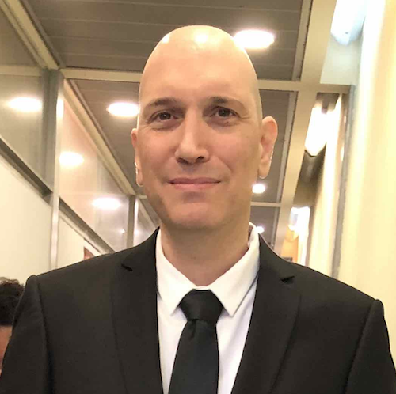

The App Developer
 This app was developed by Gal Ezry, as the final project of a five months intensive Full Stack course, held by John Bryce college, and supported by the Ministry of Economy and Industry of Israel.
Formal Education
A Bachelor of Accountancy and Economics (B.A.), as well as a Bachelor of Laws (LL.B.), all degrees by Tel Aviv University of Israel. Graduated the B.A in high grades, excelling in Math and Statistics courses.
Some Professional Background
Worked as a Financial Advisor for nine years in a leading accounting firm in Israel, every aspect of my job required a high level of preciseness and attention to detail. Whether it was Financial Statement Analysis, conducting Valuations, Budgeting, or preparing cash flow forecasts.
Worked for the Consulate General of Israel in New York, NY, for almost five years, as the
Insurance Specialist as well as a Financial Advisor.
My responsibilities as the insurance specialist included managing the health care,
the workers' compensation and the liability insurance for all delegations of Israel to
the United States.
My responsibilities as the financial advisor included monitoring the
financial system software and the adjustment of its data to the Bank accounts.
Overseeing the finance and accounting operations, and Budget Analysis.
Becoming a Software Developer
Majoring in Technology Studies in high school, the love for math, numbers and problem
solving have always been there.
A couple of years ago I reflamed my passion for coding. Self learning the basics of
web development was fun, however what I was enjoying the most was solving algorithmic
problems.
As time went by, it was clear that this is what I should be doing: Coding,
challenging myself, thinking, finding the solution, creating. It was fun, enjoyable
and fulfilling. My attention to detail was a plus and my problem solving skills have
gotten better.
Full Stack Development
The next step was being accepted to a Full Stack professional training course, supported by the State of Israel.
Full Stack Course by John Bryce
The course was a full-time training (5 days a week) from January 2021 to June 2021. Here are some of the technologies and topics that were taught during the training:
Developing the Front-end
As mentioned, this app was developed as the final project of the training.
After graduating with excellent grades, I started developing the front-end.
Having the client side's Analysis and Design done mostly by myself, allowed me
to come up with ideas and features, and to explore and implement my style.
That is, things like data Sorting & Filtering, Uploading images to the Database,
and making the website Responsive, were not part of the project's requirements.
Furthermore, this process improved tremendously my Self Learning Abilities,
my Problem Solving Skills, and my Debugging Techniques among other things.